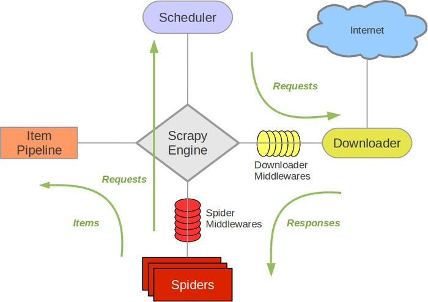

# 什么是 scrapy
Scrapy 是一个为了爬取网站数据，提取结构性数据而编写的应用框架。可以应用在包括数据挖掘，信息处理或存储历史数据等一系列的程序中。其最初是为了页面抓取 (更确切来说，网络抓取) 所设计的，也可以应用在获取 API 所返回的数据 (例如 Amazon Associates Web Services ) 或者通用的网络爬虫。Scrapy 其实是 Search+Python。Scrapy 使用 Twisted 这个异步网络库来处理网络通讯，架构清晰，并且包含了各种中间件接口，可以灵活的完成各种需求。
# scrapy 架构
# Scrapy 整体结构
1、引擎 (Scrapy Engine)
用来处理整个系统的数据流处理，触发事务。
2、调度器 (Scheduler)
用来接受引擎发过来的请求，压入队列中，并在引擎再次请求的时候返回。
3、下载器 (Downloader)
用于下载网页内容，并将网页内容返回给蜘蛛。
4、蜘蛛 (Spiders)
蜘蛛是主要干活的，用它来制订特定域名或网页的解析规则。编写用于分析 response 并提取 item (即获取到的 item) 或额外跟进的 URL 的类。
每个 spider 负责处理一个特定 (或一些) 网站。蜘蛛的整个抓取流程（周期）是这样的：
- 首先获取第一个 URL 的初始请求，当请求返回后调取一个回调函数。第一个请求是通过调用 start_requests () 方法。该方法默认从 start_urls 中的 Url 中生成请求，并执行解析来调用回调函数。
- 在回调函数中，你可以解析网页响应并返回项目对象和请求对象或两者的迭代。这些请求也将包含一个回调，然后被 Scrapy 下载，然后有指定的回调处理。
- 在回调函数中，你解析网站的内容，同程使用的是 Xpath 选择器（但是你也可以使用 BeautifuSoup, lxml 或其他任何你喜欢的程序），并生成解析的数据项。
- 最后，从蜘蛛返回的项目通常会进驻到项目管道。
5、项目管道 (Item Pipeline)
主要责任是负责处理有蜘蛛从网页中抽取的项目，他的主要任务是清晰、验证和存储数据。当页面被蜘蛛解析后，将被发送到项目管道，并经过几个特定的次序处理数据。每个项目管道的组件都是有一个简单的方法组成的 Python 类。他们获取了项目并执行他们的方法，同时他们还需要确定的是是否需要在项目管道中继续执行下一步或是直接丢弃掉不处理。
项目管道通常执行的过程有：
- 清洗 HTML 数据
- 验证解析到的数据（检查项目是否包含必要的字段）
- 检查是否是重复数据（如果重复就删除）
- 将解析到的数据存储到数据库中
6、下载器中间件 (Downloader Middlewares)
位于 Scrapy 引擎和下载器之间的钩子框架，主要是处理 Scrapy 引擎与下载器之间的请求及响应。它提供了一个自定义的代码的方式来拓展 Scrapy 的功能。下载中间器是一个处理请求和响应的钩子框架。他是轻量级的，对 Scrapy 尽享全局控制的底层的系统。
7、蜘蛛中间件 (Spider Middlewares)
介于 Scrapy 引擎和蜘蛛之间的钩子框架，主要工作是处理蜘蛛的响应输入和请求输出。它提供一个自定义代码的方式来拓展 Scrapy 的功能。蛛中间件是一个挂接到 Scrapy 的蜘蛛处理机制的框架，你可以插入自定义的代码来处理发送给蜘蛛的请求和返回蜘蛛获取的响应内容和项目。
8、调度中间件 (Scheduler Middlewares)
介于 Scrapy 引擎和调度之间的中间件，从 Scrapy 引擎发送到调度的请求和响应。他提供了一个自定义的代码来拓展 Scrapy 的功能。
数据处理流程

如图所示，显示的是 Scrapy 爬虫执行流程，绿线是数据流向，首先从初始 URL 开始，Scheduler 会将其交给 Downloader 进行下载，下载之后会交给 Spider 进行分析，Spider 分析出来的结果有两种：一种是需要进一步抓取的链接，例如之前分析的 “下一页” 的链接，这些东西会被传回 Scheduler；另一种是需要保存的数据，它们则被送到 Item Pipeline 那里，那是对数据进行后期处理（详细分析、过滤、存储等）的地方。另外，在数据流动的通道里还可以安装各种中间件，进行必要的处理。
Scrapy 中的数据流由执行引擎控制，其过程如下:
- 引擎打开一个网站 (open a domain)，找到处理该网站的 Spider 并向该 spider 请求第一个要爬取的 URL (s)。
- 引擎从 Spider 中获取到第一个要爬取的 URL 并在调度器 (Scheduler) 以 Request 调度。
- 引擎向调度器请求下一个要爬取的 URL。
- 调度器返回下一个要爬取的 URL 给引擎，引擎将 URL 通过下载中间件 (请求 (request) 方向) 转发给下载器 (Downloader)。
- 一旦页面下载完毕，下载器生成一个该页面的 Response, 并将其通过下载中间件 (返回 (response) 方向) 发送给引擎。
- 引擎从下载器中接收到 Response 并通过 Spider 中间件 (输入方向) 发送给 Spider 处理。
- Spider 处理 Response 并返回爬取到的 Item 及 (跟进的) 新的 Request 给引擎。
- 引擎将 (Spider 返回的) 爬取到的 Item 给 Item Pipeline，将 (Spider 返回的) Request 给调度器。
- (从第二步) 重复直到调度器中没有更多地 request，引擎关闭该网站
# Scrapy 命令行工具
Scrapy 是通过 scrapy 命令行工具进行控制的。这里我们称之为 “Scrapy tool” 以用来和子命令进行区分。对于子命令，我们称为 “command” 或者 “Scrapy commands”。Scrapy tool 针对不同的目的提供了多个命令，每个命令支持不同的参数和选项
# 默认的 Scrapy 项目结构
在开始对命令行工具以及子命令的探索前，让我们首先了解一下 Scrapy 的项目的目录结构。虽然可以被修改，但所有的 Scrapy 项目默认有类似于下边的文件结构:
scrapy.cfg
myproject/
__init__.py
items.py
middlewares.py
pipelines.py
settings.py
spiders/
__init__.py
spider1.py
spider2.py
...
- scrapy.cfg
存放的目录被认为是项目的根目录。该文件中包含 python 模块名的字段定义了项目的设置。 - items.py
该文件中包含了 scrapy 数据容器模型代码。
Item 对象是种简单的容器，保存了爬取到得数据。其提供了类似于词典 (dictionary-like) 的 API 以及用于声明可用字段的简单语法。 - middlewares.py
该文件中包含下载器中间件和爬虫中间件模型代码。
下载器中间件是介于 Scrapy 的 request/response 处理的钩子框架。是用于全局修改 Scrapy request 和 response 的一个轻量、底层的系统。
爬虫中间件是介入到 Scrapy 的 spider 处理机制的钩子框架，您可以添加代码来处理发送给 Spiders 的 response 及 spider 产生的 item 和 request。。 - pipelines.py
每个管道组件是实现了简单方法的 Python 类。
他们接收到 Item 并通过它执行一些行为，同时也决定此 Item 是否继续通过后续的管道组件，或是被丢弃而不再进行处理。 - settings.py
Scrapy 设定 (settings) 提供了定制 Scrapy 组件的方法。
您可以控制包括核心 (core)，插件 (extension)，pipeline 及 spider 组件。
# 编写第一个 Scrapy 爬虫
任务:
- 创建一个 Scrapy 项目
- 定义提取的 Item
- 编写爬取网站的 spider 并提取 Item
- 编写 Item Pipeline 来存储提取到的 Item (即数据)
# 创建项目
在开始爬取之前，您必须创建一个新的 Scrapy 项目。
进入您打算存储代码的目录中，运行下列命令: scrapy startproject tutorial
该命令将会创建包含下列内容的 tutorial 目录:
tutorial/
scrapy.cfg
tutorial/
__init__.py
items.py
pipelines.py
settings.py
spiders/
__init__.py
...
这些文件分别是:
- scrapy.cfg: 项目的配置文件
- tutorial/: 该项目的 python 模块。之后您将在此加入代码。
- tutorial/items.py: 项目中的 item 文件。
- tutorial/pipelines.py: 项目中的 pipelines 文件。
- tutorial/settings.py: 项目的设置文件。
- tutorial/spiders/: 放置 spider 代码的目录
# 定义 Item
Item 是保存爬取到的数据的容器；其使用方法和 python 字典类似，并且提供了额外保护机制来避免拼写错误导致的未定义字段错误。
类似在 ORM 中做的一样，您可以通过创建一个 scrapy.Item 类，并且定义类型为 scrapy.Field 的类属性来定义一个 Item。(如果不了解 ORM, 不用担心，您会发现这个步骤非常简单)
首先根据需要从 dmoz.org 获取到的数据对 item 进行建模。我们需要从 dmoz 中获取名字，url，以及网站的描述。对此，在 item 中定义相应的字段。编辑 tutorial 目录中的 items.py 文件。
items.py | |
import scrapyclass | |
DmozItem(scrapy.Item): | |
title=scrapy.Field() | |
link=scrapy.Field() | |
desc=scrapy.Field() |
代码一开始这看起来可能有点复杂，但是通过定义 item，您可以很方便的使用 Scrapy 的其他方法。而这些方法需要知道您的 item 的定义。
# Spider 爬虫
Spider 是用户编写用于从单个网站 (或者一些网站) 爬取数据的类。
其包含了一个用于下载的初始 URL，如何跟进网页中的链接以及如何分析页面中的内容，提取生成 item 的方法。
为了创建一个 Spider，您必须继承 scrapy.Spider 类，且定义以下三个属性:
- name: 用于区别 Spider。该名字必须是唯一的，您不可以为不同的 Spider 设定相同的名字。
- start_urls: 包含了 Spider 在启动时进行爬取的 url 列表。因此，第一个被获取到的页面将是其中之一。后续的 URL 则从初始的 URL 获取到的数据中提取。
- parse () 是 spider 的一个方法。被调用时，每个初始 URL 完成下载后生成的 Response 对象将会作为唯一的参数传递给该函数。该方法负责解析返回的数据 (response data)，提取数据 (生成 item) 以及生成需要进一步处理的 URL 的 Request 对象。
也可以使用命令行创建一个 Spider。比如要生成 Quotes 这个 Spider，可以执行如下命令：cd 项目目录scrapy genspider quotes quotes.toscrape.com
语法格式scrapy genspider [options] <name> <domain>
以下为我们的第一个 Spider 代码，保存在 tutorial/spiders 目录下的 dmoz_spider.py 文件中，如 Code 3-21 所示:
# -*-coding: utf-8 -*- | |
import scrapyclass | |
DmozSpider(scrapy.Spider): | |
name = 'dmoz' | |
allowed_domains = ['dmoz.org'] | |
start_urls = ['http://www.dmoz.org/Computers/Programming/Langurages/Python/Books', | |
'http://www.dmoz.org/Computers/Programming/Langurages/Python/Resources' | |
] | |
def parse(self, response): | |
filename=response.split("/")[-2] | |
with open(filename,'wb') as f: | |
f.write(response.body) |
# 爬虫爬取
进入项目的根目录，执行下列命令启动 spider: scrapy crawl homeweather
# 紧急
学校要提前放假，考试也提前了。。
抓紧时间备考了
考试后再总结